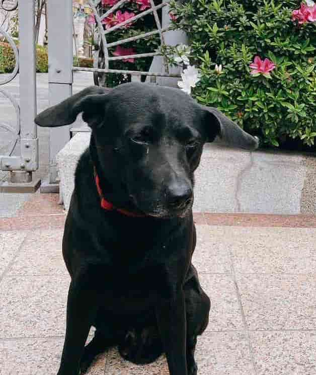
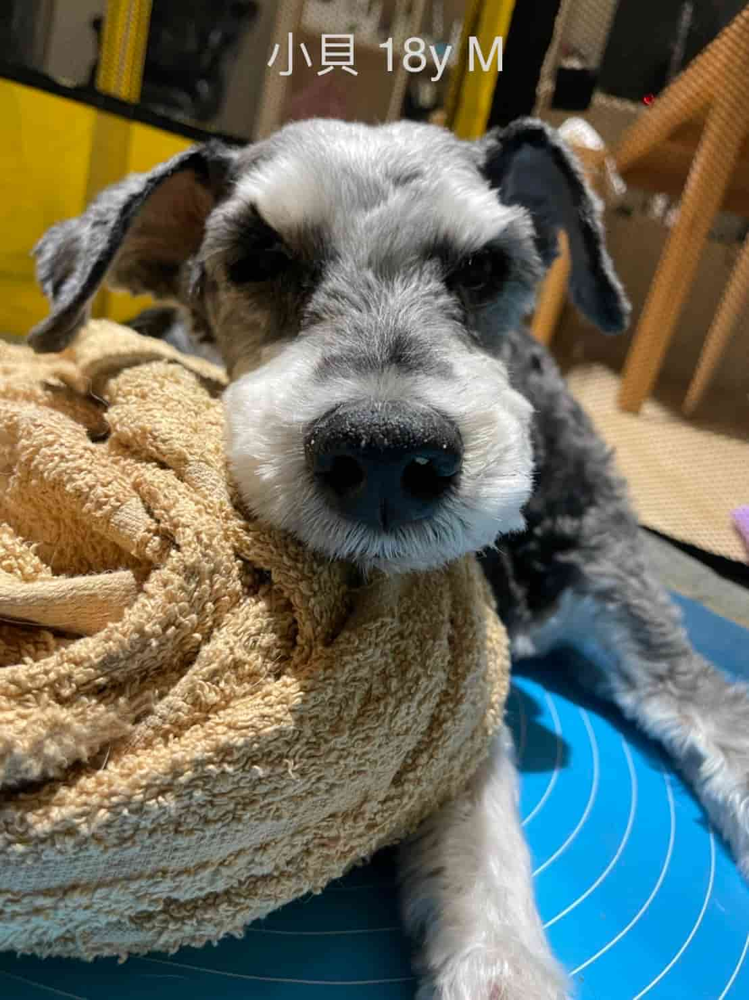
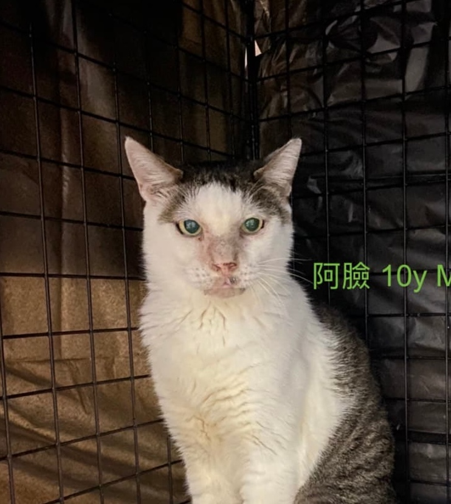
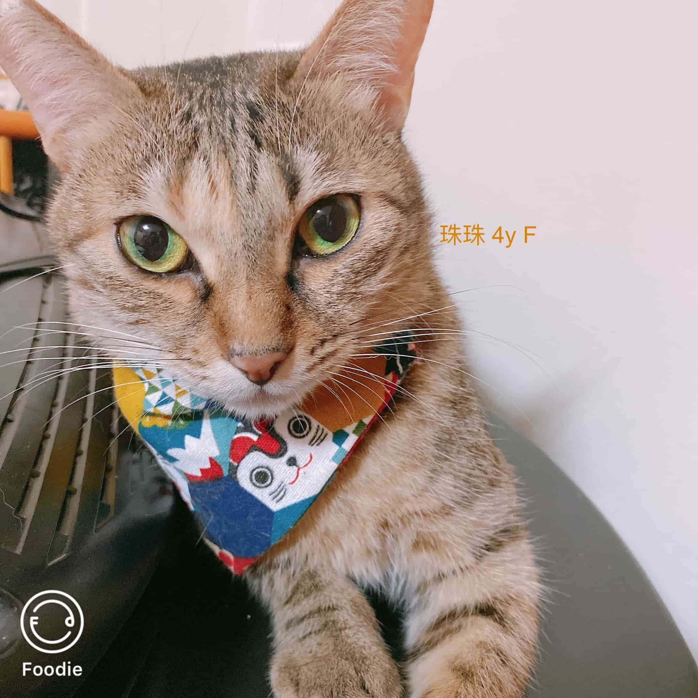
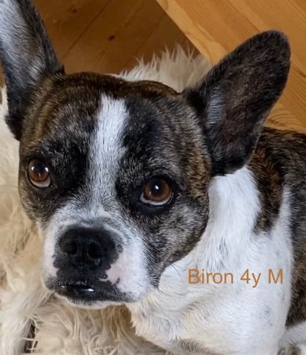

01 · 關於動物溝通
牠們不是不說，是我們一直用錯了頻道
動物溝通不是讀心術表演，也不承諾百分之百的翻譯正確率。牠更像是一次翻譯——把動物的畫面、氣味記憶、情緒感受，轉換成人類聽得懂的句子。以下是幾隻曾經「開口」的動物，用牠們自己的話說給你聽。
「我沒有不吃飯，是肚子裡好像有石頭，動來動去的，喝水比較不痛，所以我只喝水。」
— 一隻突然厭食的老貓，在溝通裡第一次說出「痛」
「我沒有想要當姊姊，我只是想繼續當個小孩，被抱、被摸摸、耍賴。」
— 一隻因為家裡多了新成員，突然被要求懂事的貓
動物溝通到底在「溝通」什麼？
大多數的個案問題並不玄幻：為什麼突然亂尿尿、為什麼半夜大叫、會不會怕痛、喜不喜歡新來的手足、走失了在哪裡。動物用畫面、氣味、身體感受回應，溝通師的工作是把這些非語言的訊息，翻成一句一句你聽得懂的話。
為什麼溝通師不露臉？
因為主角從來不是溝通師本人。個案裡出現的每一句話，都是那隻動物的，不是我的詮釋秀。留白，是為了讓你專心聽牠說話，而不是記得我長什麼樣子。
需要動物在現場嗎？會很痛苦或有壓力嗎？
不需要。溝通是遠端進行的，動物完全不會被打擾，甚至不會知道自己「被溝通」了。你只需要提供一張近期的照片與名字。
如果動物已經離開了呢？
可以。離世溝通是這裡最常被輕聲問起的一種個案，通常也是最溫柔的一種——很多時候，牠們只是想告訴你「我很好，你不用一直掛心」。
02 · 動物語錄機
按一下，聽聽今天輪到誰說話
「太陽出來了，把拔要起床了啊，他已經睡了這麼久！」
— 小波，7個月大的貓，關於早晨叫醒主人這件事
03 · 個案的信
五封，來自不同動物的信
每個個案都畫成一組四格印記——不是牠們的臉，是牠們那次溝通裡最重要的四個畫面。點開信封，讀完整封信。


偷偷走失後，家人幾乎每天都在附近巷子繞。連上線的那一刻，牠給出的畫面很安靜——濕濕的草地，一叢矮樹叢，牠趴在底下休息，不趕時間。
牠說自己在一個沒有河、離房子有段距離的地方，還給了一個像十字路口的畫面，說不清楚在哪，但那一帶對牠來說很陌生，也因此很安全，沒有其他貓會來搶地盤。
「我在想姊姊，也想去找姊姊散步。可以問問今天能不能不要回家嗎？我明天會回去。」
牠沒有害怕，也沒有受傷的感覺，只是還沒準備好結束這趟自己的小旅行。溝通不是導航，沒辦法給出精確的門牌，但常常能給照護人一件更重要的事：確認牠平安，然後知道要往哪個方向多留意。


小貝的照護人只提了一個心願：希望牠知道，時間到了可以安心離開，不用為了誰硬撐。連線上的小貝很平靜，眼神柔和，說身體有點懶洋洋、睡得比較多，但不痛，暖暖的，很舒服。
牠說吃得下一點點就滿足了，剩下的力氣想留著，用來多看看這個家、多聽聽家人的聲音，記住屋子裡每一個小細節。
「打針最痛了，但我現在不用擔心那個了。我喜歡現在的溫度和環境，喜歡陪在他們身邊，我已經準備好了，謝謝收留我。」
牠也請家人放心——牠說變成靈體之後會很輕鬆，偶爾還是會回來看看。這場溝通沒有讓誰不再難過，但讓「放手」這件事，多了一點點的心安。


阿臉在外面生活了很久，是那一帶的老大，也是「擋在前面」的那一個。被接進家裡之後，牠吃得好、睡得好，卻每晚固定嘶吼、撞籠子，家人一度以為牠不喜歡這個家。
牠說不是不喜歡——是還放不下街上那群曾經一起取暖的孩子，沒有人在外面幫牠們擋了。牠也第一次說出，被關起來這件事，讓牠覺得自己出不去了、幫不上忙了。
「他們對我很好，會給我吃的、安撫我，但如果我住下來了，我就出不去了——我在外面已經很習慣了。」
這場溝通後來談的不是「牠愛不愛這個家」，而是牠需要被賦予一個「還有點自主權」的角色：知道自己在這裡不是被收編，而是被邀請。這對很多從街頭進入家庭的動物來說，是同一種心情。


珠珠是個對愛很敏感的孩子，連線上的瞬間就跑到跟前，問「你找我嗎」「你喜歡我哪裡可愛呢」。但這次牠的語氣裡，第一次出現了不安。
家裡新來了兩隻貓之後，牠突然覺得自己被要求「當大姊姊」——要包容、要禮讓、要負責照顧新來的。牠說自己空間變小了，也不確定自己還能不能像以前一樣，理直氣壯地當個小孩。
「不要叫我照顧他，把我們兩個當成同樣的年紀來看就好，我只想做我自己，我想撒嬌也想調皮。」
牠不是排斥新成員，是害怕自己在這個家裡的位置被重新分配、被縮小。後來照護人調整了互動方式，特別留出只屬於珠珠的專屬時間——這種「被單獨看見」的需求，在多貓多狗家庭裡，其實比想像中更常見。


Biron 是在西班牙街頭被救援、後來到德國落地生根的狗。第一次溝通時，牠對人類和大狗都帶著近似厭惡的警戒；兩年後家裡添了新生兒，照護人再次找上門，想知道牠這次會怎麼說。
牠已經不太一樣了。牠知道家裡多了一個「妹妹」，也知道媽媽那陣子很累，於是自己決定搬去妹妹房間陪睡——不是不愛媽媽了，是怕自己太吵，捨不得媽媽沒辦法好好休息。
「我常常有被拋棄的感覺，我怕我長得這麼醜，他們最後還是會選擇不要我……但每次看到媽咪來接我回去，我就超開心。」
Biron 的故事橫跨兩次溝通，是這裡少數的「長期個案」。牠讓人看到，動物的情緒不是靜止的——牠們也會在時間裡，慢慢學會安全感是什麼樣子。
04 · 小測驗
你和你的動物，現在對到頻道了嗎？
四個小情境，測測你有多常「翻譯對」牠的意思。這不是科學測驗，只是一面鏡子。
Q1. 牠半夜對著空氣一直叫，你通常會——
Q2. 家裡多了一隻新動物之後，原本的孩子開始搗蛋，你會先——
Q3. 牠突然食慾不振，你第一時間會——
Q4. 牠靠過來，把頭輕輕靠在你身上，你覺得牠想說的是——
06 · 申請成為個案
四個步驟，收到牠的第一封信
填寫申請表
提供動物的名字、照片與你最想問的三個問題。
安排時段
溝通全程遠端進行，動物不會被打擾，也不需要在場。
進行溝通
約 30–45 分鐘，逐字記錄牠說的每一句話。
收到逐字信
完整文字紀錄，附上這次的四格印記，屬於你們的信。
準備好聽牠說話了嗎？
目前個案採預約排隊制，每週釋出有限名額。填好申請表後，我會親自看過你的問題，確認合適的時段再與你聯繫。
＊ 申請表送出後會進入排隊名單；如果只是想先問問題，也可以直接加 LINE 聊聊。
「謝謝你來找我，也謝謝你願意聽我把話說完。」
— 一句幾乎出現在每個個案結尾的話